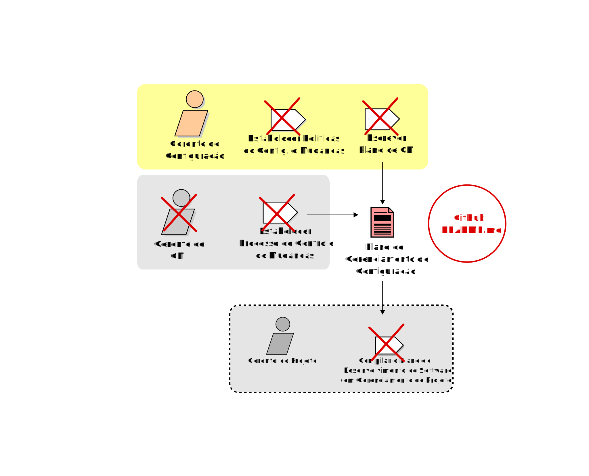

RadarCriminal
MDS/GPP 2013.2 [Grupo 2]
Hilmer Rodrigues Nery
Out 15, 2013
MDS - Métodos de Desenvolvimento de Software
| Nome | Papel |
|---|---|
| Sérgio Silva | Desenvolvimento / Gestão / GCM |
| Eduardo Augusto | Desenvolvimento / Gestão de Configuração e Mudança |
| Lucas Carvalho | Desenvolvimento Front/BackEnd |
| Lucas Andrade | Desenvolvimento Front/BackEnd |
| Eliseu Egewarth | Desenvolvimento Front/BackEnd |
Links Importantes
Wiki do Grupo | GitHub | Grupo FacebookObjetivos da Entrega
Nota1/Entrega - Etapa/Feedback 2
- Documento de Arquitetura do Projeto
- Configuração do Repositório (Github)
- Wiki atualizada
Objetivos da Entrega
Nota1/Entrega - Etapa/Feedback 3
- Apresentação das informações do Documento de Visão (15%)
- Entrega/Apresentação do Processo definido utilizando o EPF (15%)
- Entrega/Apresentação da 1a. Release do Projeto ( arquitetura ) (60%)

Por que do tema?
RadarCriminal
Tema:
RadarCriminal
- Dados Abertos
- Um serviço a população
- Nenhuma solução que mapeie a crimininalidade no DF
Metodologias:
RUP : Rational Unified Process (ou Processo Unificado)
Processo Unificado de Desenvolvimento
Disciplinas:
- Requisitos
- Arquitetura
- Desenvolvimento
- Fase de Transição
- Implantação
- Gerência de Projeto
- Gerência de Configuração e Mudanças
Fases:
- Fase de Iniciação (Concepção)
- Fase de Elaboração
- Fase de Construção
- Fase de Transição
Como o processo foi modelado?
EPF - Eclipse Process Framework
Gráfico das Baleias

Workflow (SEGUNDO O UP)
Workflow (DO NOSSO PROJETO)
Workflow Concepcao

Workflow Elaboração

Workflow Construção

Workflow Transição

Tasks (DO NOSSO PROJETO)

Tarefas (Tasks)
Tarefas estabelecidas no fluxo de trabalho
Planejar Configuração do Projeto e Controle de Mudanças
Criar Ambiente para CM do Projeto
Criação e Configuração Ambiente GitHub
Alterar e Liberar Itens de Configuração
Gerenciar Baselines e Releases
Recurso do git: git tag 1.0.0 1b2e1d63ff

Ferramentas de Gestão
GPP/MDS
Ferramenta de Controle de Versão Organization
GitHub Repositories
GitHub Branchs
Teams GitHub

Acesso ao Software
Link para a aplicação
Bibliografia
IBM Rational Unified Process
Google HTML5 Slide Template
Artefatos RUP (Português)
Introdução ao Gerenciamento de Configuração e Mudança